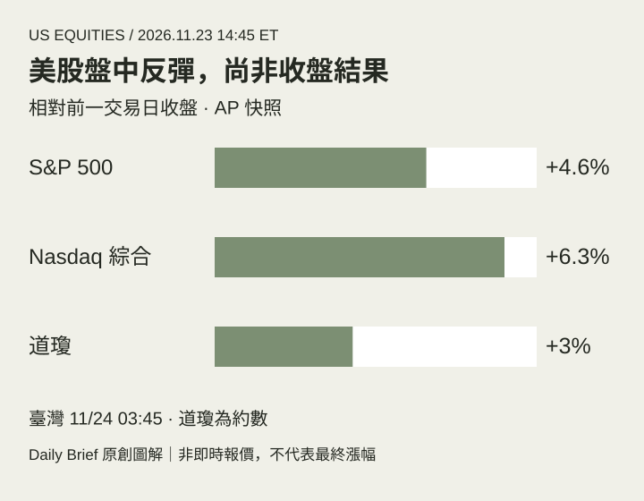

MARKETS / THE ESSENTIALS
黃仁勳回任 NVIDIA 執行長，美股盤中急彈
收錄於 2026-11-24 日報 · NVIDIA 官方復職公告
發生什麼事
- NVIDIA 23 日宣布黃仁勳即刻恢復總裁、執行長與董事職務；Harvey Jones 留任董事長，Colette Kress 繼續任財務長。董事會表示獲美國政府高層意見後，認為復職不構成國安風險。
- AP 美東 23 日 14:45（臺灣 24 日 03:45）報導：相對前一交易日收盤，S&P 500 漲 4.6%、Nasdaq Composite 漲 6.3%、道瓊漲約 3%。報導將加速反彈與復職消息連結，這是新聞歸因，不是單一因果證明。
影響與限制
- 領導權變動牽動 AI 產業及大盤風險情緒；NVIDIA 的獨立董事調查與政府調查仍繼續。 本期未核實美股最終收盤；盤中漲幅不可當全天結果，復職也不等於調查結案。

原文與查核
以上為整理與解讀，重要細節請回到原文核對。
- NVIDIA 官方復職公告 ↗發布 2026-11-23 · 查核 2026-11-24T05:01:26+08:00
- AP 原始市場報導 ↗發布 2026-11-23 · 查核 2026-11-24T05:02:19+08:00